Case study: VRE site selection in British Columbia#
Warning
This library is under heavy development
To demonstrate RESource's practical utility, we apply the framework to the Canadian province of British Columbia (BC). BC presents an ideal testbed due to its varied geography—coastal areas, rugged mountains, and interior plateaus—and a favorable policy environment, including the Clean Energy Act, expedited permitting processes for wind projects and renewable energy targeted call for power 2024, 2025 by BC Hydro. These characteristics offer a rich context for testing spatial, technical, and regulatory dimensions of VRE siting.
Data sources#
The RESource framework integrates multiple data sources to characterize VRE potential in BC: Here is a quick overview of the data sources used in this case study:

Coordinate Reference System (CRS)#
CRS is a critical choice when it comes to geospatial analysis. RESource involves area calculations as an impact of spatial filters usage on land availability for site development.
Here is a summary of the CRS used in this tool and study.
CRS (EPSG) |
Name / Projection |
Units |
Coverage |
Purpose and Recommended Use in BC Study |
|---|---|---|---|---|
4326 |
WGS 84 (Geographic) |
Degrees |
Global |
Storage, data exchange, global overlays. |
3005 |
NAD83 / BC Albers Equal Area |
Meters |
BC |
Provincial analyses (area, buffers, land use, siting). Official BC projection. |
3347 |
NAD83 / Canada Albers Equal Area |
Meters |
Canada-wide |
Pan-Canadian analyses (NRCan datasets, multi-province work). 3005 is better suitable for land-area calculations in BC explicit studies. |
3035 |
ETRS89 / LAEA Europe |
Meters |
Europe |
European datasets only (default CRS for atlite's Exclusion Container, i.e. for land area calculation). Not suitable for BC. |
Tip
Users of this tool (or in any other geospatial analysis!) should critically review the preferred CRS for area calculation. Check EPSG Resources for more details on regional coordinate system suitability. Meter/degree-based (default/explicit for regions) CRS is configurable in RESource.
From Districts to Data Grids: Unlocking Finer Detail#
BC was discretized into uniform grid cells using the spatial resolution of ERA5 data (~30 km × 30 km), with each cell serving as the basic unit of analysis. For each cell, RESource processed multiple geospatial layers, filtering out ineligible land based on legal (e.g., protected areas), environmental (e.g., slope, wetlands), and infrastructure-related constraints (e.g., distance to substations). Eligible cells were then evaluated for their proximity to the grid and assigned hourly profiles of solar irradiance and wind speed, allowing theoretical VRE potential to be estimated per technology.
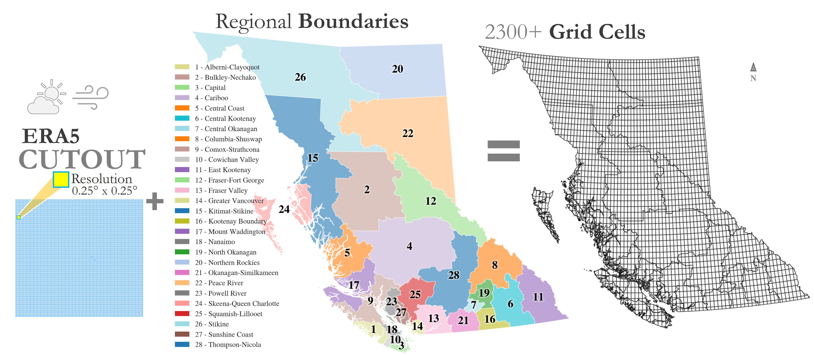
Every cell tells a story, therefore we then plug in land-use, climatology, accessibility, etc. to analyze scenario-specific studies to answer our questions:
Spatial Screening and Land Availability#
The key question we want to ask is Can We Build Without Overlapping Nature?
Key parameters are configurable to reflect geographic constraints (e.g., slope, protected areas). We applied the spatial screening process using global raster datasets from the GAEZ to systematically identify suitable VRE sites by filtering land based on land cover, terrain slope, and exclusion zones. Land cover data layers are used to selectively include classes such as croplands, grasslands, shrubs, and bare soil while excluding artificial surfaces, dense forests, and water bodies. Terrain slope rasters helped eliminate areas with steep gradients over 30%, which pose construction and accessibility challenges. Additionally, exclusion zones—compiled from global biodiversity, wetland, and protected area databases—were entirely filtered out from consideration to respect environmental conservation boundaries. This layered geospatial filtering ensures that selected sites align with both technical feasibility and ecological integrity. We extracted the land availability map from this spatial screening process.
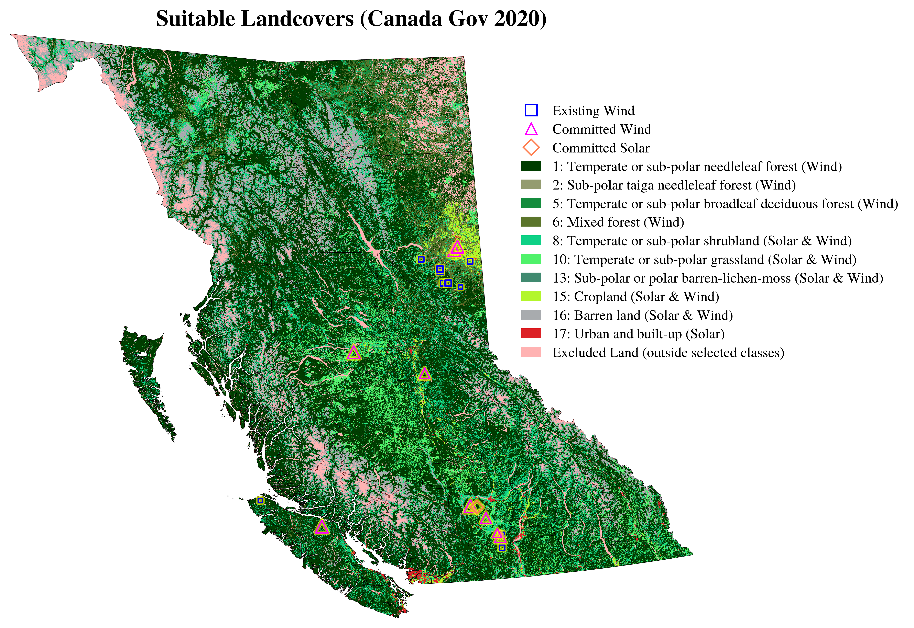
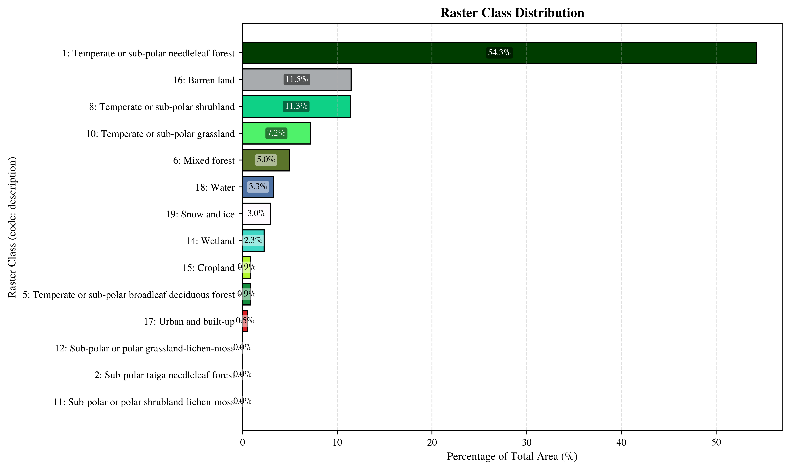
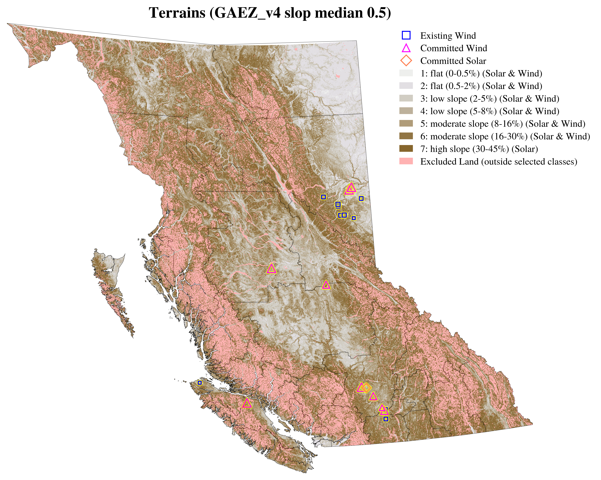
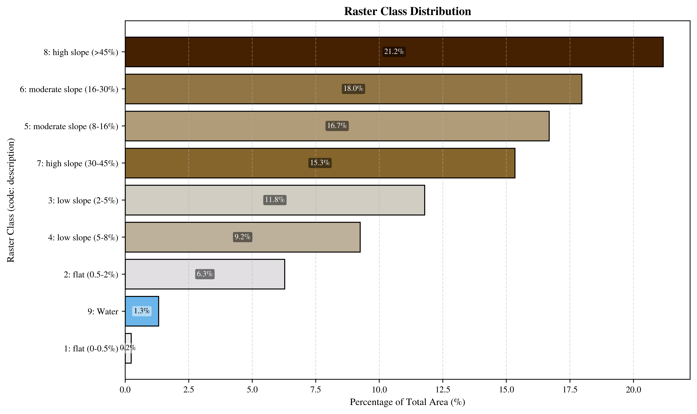
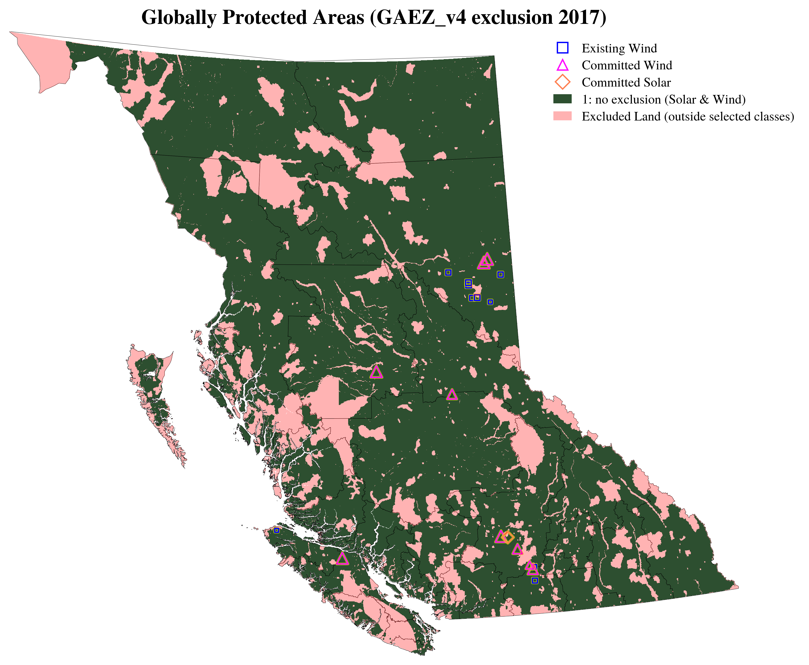
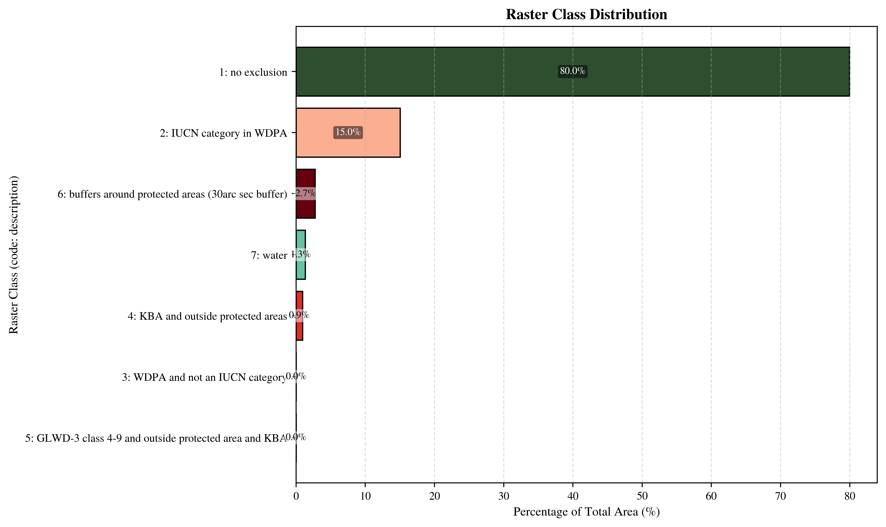
For full details on the raster classes, refer to the Global Agro-Ecological Zones v4 – Model documentation; Chapter 2.Page 17 for Elevation and terrain-slope data, page 18 for Land Cover data and page 20 for Exclusion zones.

Land-use Restriction Buffers#
Scenario Name |
Buffer Applied |
Description |
|---|---|---|
BASELINE |
None |
Baseline scenario; no additional buffer zones around protected areas or aeroways. |
POLICY (Restricted land-use policy) |
High slope areas, Aeroway, Canadian conservation and protected lands |
Policy, introducing restricted buffer areas for solar/wind site development around airway, high slope areas, and provincial/federal protected fields. |
BASELINE#
Buffer Type |
Category/Layer |
☀️ Solar No-go Buffer (meters) |
🌬️ Wind No-go Buffer (meters) |
|---|---|---|---|
Aeroway |
Aerodrome |
2,000 |
5,000 |
Runway |
1,500 |
3,000 |
|
Helipad |
1,000 |
1,000 |
|
Taxiway/Apron/Gate |
500 |
1,000 |
|
Canadian Conservation and Protected Lands |
Strict Nature Reserve |
1,000 |
1,000 |
Wilderness Area |
1,000 |
1,000 |
|
National Park |
1,000 |
1,000 |
|
Natural Monument/Feature |
500 |
500 |
|
Habitat/Species Management Area |
500 |
500 |
|
Protected Landscape/Seascape |
500 |
500 |
|
Protected Area with Sustainable Use of Natural Resources |
500 |
500 |
|
Interim Sites (unknown specifics) |
500 |
1,000 |
|
Other Effective area-based Conservation Measures (OECM) areas |
500 |
1,000 |
Note: Some global protected areas overlap with Canadian conservation and protected lands.
Here is a visual on how the no-go zones for site development looks like:
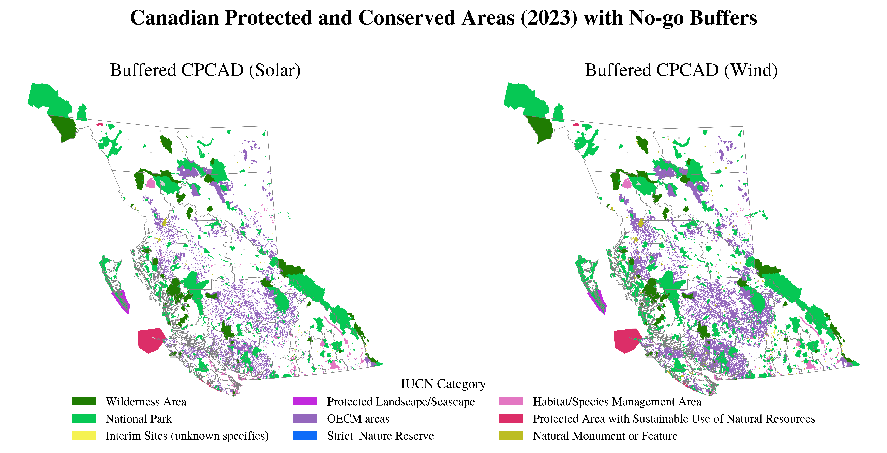
Note: sourced from Canadian Protected and Conserved Areas Database, 2024
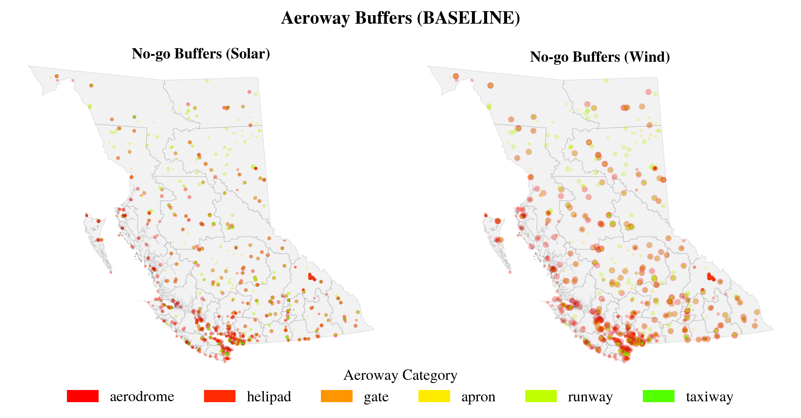
Note: Aeroway data is sourced from Openstreetmap.
Restricted Land-use POLICY scenario:#
Buffers listed below are incremental restrictions on-top of the BASELINE assumptions.
Buffer Type |
Category/Layer |
☀️ Solar No-go Buffer (meters) |
🌬️ Wind No-go Buffer (meters) |
|---|---|---|---|
Aeroway |
Aerodrome |
+3,000 |
+5,000 |
Runway |
+500 |
+500 |
|
Helipad |
+1,000 |
+1,000 |
|
Canadian Conservation and Protected Lands |
Strict Nature Reserve |
+1,000 |
+1,000 |
Wilderness Area |
+1,000 |
+1,000 |
|
National Park |
- |
1,000 |
|
Natural Monument/Feature |
+1,500 |
+1,500 |
|
Habitat/Species Management Area |
+1,000 |
+1,500 |
|
Protected Landscape/Seascape |
+1,000 |
+1,500 |
|
Protected Area with Sustainable Use of Natural Resources |
+1,000 |
+1,500 |
|
Interim Sites (unknown specifics) |
+500 |
+500 |
|
Other Effective area-based Conservation Measures (OECM) areas |
- |
+200 |
Spatial screening revealed that roughly 64% of BC’s land is unsuitable for VRE development due to terrain, regulatory restrictions, and conservation priorities. The remaining land comprises technically viable areas suitable for further capacity and cost assessment. Figure 5 illustrates the land availability for grid cells (in the left most plot) and the potential capacity translated from availability percentage. It illustrates that steep terrain in the province’s western region limits turbine deployment, while the southern interior exhibits favorable solar deployment. Regulatory buffers around aeroways and parks further shape siting decisions.
Resource's spatial screening process for BC, showing the stepwise filtering of land availability based on terrain, land cover, and exclusion zones. These plots are in 100m resolution, illustrating the progressive reduction of eligible land as each layer of constraints is applied.
The land availability maps for BC, illustrating the remaining eligible areas after applying each layer of spatial constraints.From the explicit impact of each spatial layers, the map below shows that suitable land cover selection and regionally protected lands have the biggest impact on land availability for site development. This visual help us to quickly spot spatial impact of our land-use layer selections and no-go buffers.
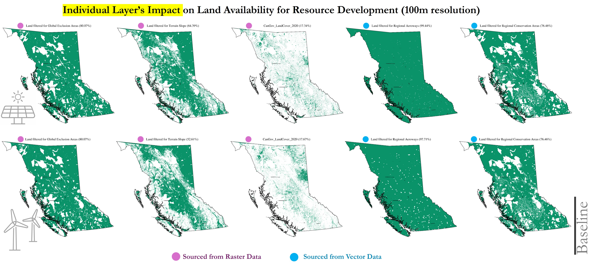
The cumulative impact of each layer on land availability, illustrating how terrain, land cover, and exclusion zones progressively reduce the pool of eligible sites. The following maps show the final screening result in 100m resolution (land container's default resolution. Land container helps us to account the configured logics for layer/category-wise selections and buffers). We rescale this availability numbers to ERA5 cells resolution. Finally we translate these numbers to potential capacity by using technology land-use intensity numbers.
Spatial screeing result
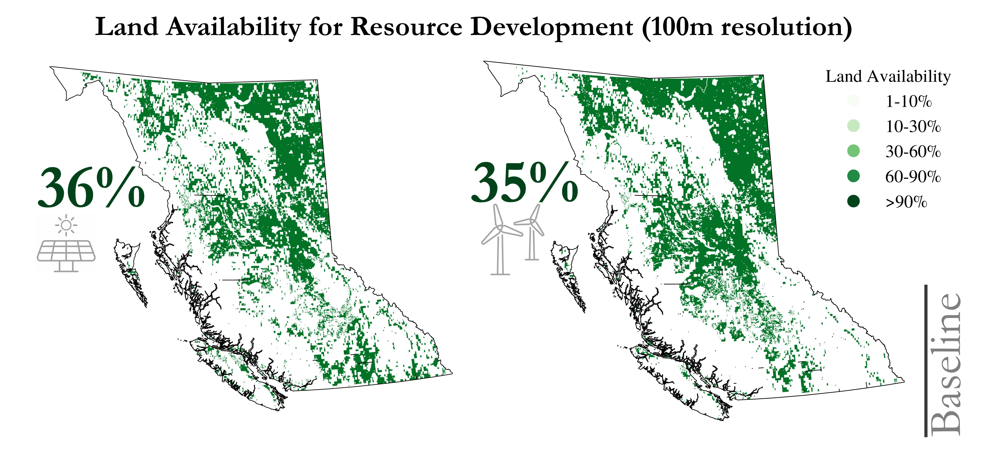
Rescaling the land availability map to the ERA5 grid resolution.
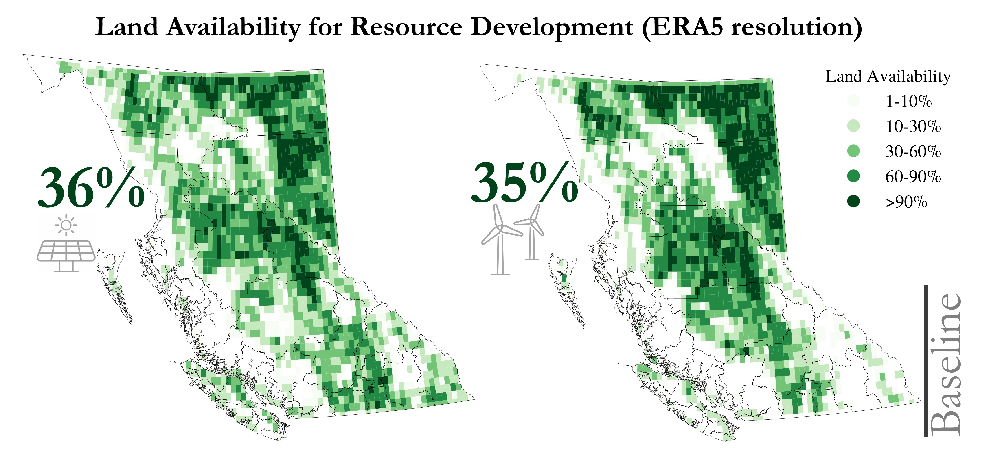
The rescaled land availability map for BC, showing the eligible areas aligned with the ERA5 grid resolution. This step ensures that the spatial data is compatible with the weather-driven modeling inputs used in subsequent analyses.
Potential capacity#
We translated eligible land into theoretical energy capacity using technology-specific land-use intensity benchmarks—3 MW/km² for wind and 1.45 MW/km² for solar PV consistent with prior studies.
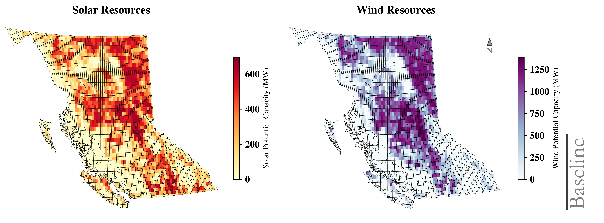
Capacity factor#
While the potential capacity map highlights the total installable potential based on available land and infrastructure constraints, the capacity factor (CF) map provides deeper insights into the quality and reliability of the resource by capturing temporal generation patterns driven by weather conditions. Figure 6 shows the spatial distribution of annual mean capacity factors for solar photovoltaic (left) and wind energy (right) across BC. The solar map highlights the southern interior as the most viable region for solar PV deployment, with capacity factors increasing progressively from coastal to inland zones due to clearer skies and higher irradiance. The wind energy map, derived from coarse-resolution GWA data, reveals elevated wind potential primarily in the northern and coastal regions. While the spatial granularity of the wind map captures broader regional trends, its coarse resolution may obscure finer-scale resource variability. Together, these maps support the identification of high-potential VRE zones, facilitating regionally informed renewable energy planning.
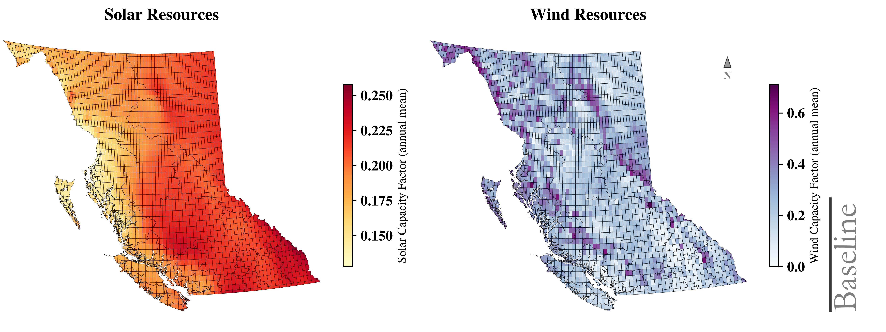
Temporal profiles#
Building on the spatial overview of average capacity factors, we next extract hourly generation profiles to analyse seasonal and diurnal performance dynamics at representative high-potential sites. Figure 7 illustrates the hourly resolution capacity factor (CF) profiles for selected solar and wind energy sites—Capital 1 (southern interior) and Peace River 1 (northern BC). For solar PV (top panel), the profiles reveal expected seasonal variation, with high CFs during summer months and near-zero generation in winter nights. The smoother shape and consistent daylight generation patterns underscore the predictability of solar profiles. In contrast, wind profiles (bottom panel) show higher variability throughout the year, with sporadic peaks and low average CFs. Notably, wind generation in Peace River exhibits distinct winter peaks, complementing the seasonal lull in solar output. These contrasting patterns demonstrate the value of geographic and technological diversification for renewable integration and grid stability. The hourly granularity provided by RESource supports more robust energy system modeling and planning scenarios.
While temporal profiles provide critical insight into seasonal and diurnal generation patterns, effective VRE planning also requires evaluating the spatial and regulatory context of candidate sites. The next section focuses on the geographic, infrastructural, and policy-driven parameters that shape site suitability, highlighting how RESource integrates these factors to inform spatial prioritization and investment readiness.
This case study in BC provides a practical example of how RESource integrates geospatial screening, weather-driven modeling, and infrastructure constraints to identify and evaluate VRE deployment opportunities. The following section presents the analytical outputs from this application, including estimated technical potential, site rankings, and the influence of policy constraints on site viability.
Insights from the BC case study#
Applying the RESource to BC yields several important findings on the spatial and technical viability of VRE deployment. The analysis integrates VRE resource’s characterization, and infrastructure accessibility to derive ranked candidate sites for solar PV and onshore wind development.
Renewable energy potential and site suitability#
Our geospatial assessment identifies strong regional variation in VRE potential across BC:
Solar PV potential is highest in the southern interior, where terrain is flatter and solar irradiance is stronger and more consistent.
Wind energy resources are most promising along the north and west coasts, with additional pockets of viability in elevated interior plateaus.
Applying regulatory and land-use buffers leads to measurable reductions in technically viable capacity. Buffer restrictions were applied more stringently to wind than to solar, so larger reductions in capacity were expected. The results confirm this, with about 10% of wind potential capacity and only 1% of solar potential capacity lost compared to the baseline. Across BC, this corresponds to approximately 368.6 GW of wind, and 6.5 GW of solar potential becomes unavailable. The following map illustrates these reductions by regional district, showing the magnitude and spatial distribution of losses for solar (left) and wind (right).
Tip
A planner always has to remember "Not All Potential Becomes Power"!
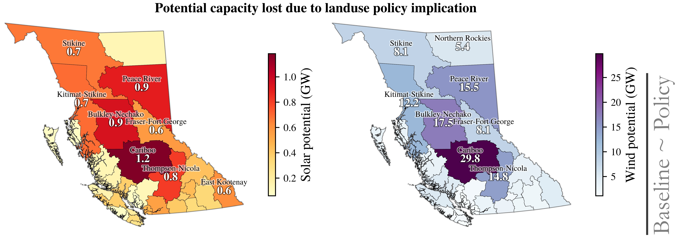
The largest reductions appear in Cariboo (≈73 GW wind, 0.9 GW solar), Peace River (≈46.5 GW wind, 0.4 GW solar), and Bulkley–Nechako (≈46.7 GW wind, 1.0 GW solar), with notable coastal impacts in Kitimat–Stikine (≈38.3 GW wind, 0.8 GW solar) and Skeena–Queen Charlotte (≈18.6 GW wind, 0.2 GW solar). These outcomes align with the spatial overlap between resource-rich zones and extensive protected or conservation lands shown above. Northern and interior districts host some of the best wind regimes in BC, but they also contain large areas of wilderness, national parks, and OECM designations. Applying buffers around these features excludes broad swaths of otherwise high-quality land, driving large capacity losses.
Coastal districts face similar constraints: strong wind resources coincide with marine and terrestrial protected areas, including seascapes and ecological management zones. These restrictions lead to reductions of more than 20–40 GW total VRE potential reduction in several districts. Importantly, these losses occur not because the resources are weak, but because the best wind and solar zones are heavily overlapped by protected lands and their buffers. This explains why reductions are concentrated in the very regions that appear most attractive from a purely technical perspective.
To inform planners, the following visual presents two maps of BC, illustrating the theoretical capacity potential for solar and wind energy. The map colors represent the spatial distribution of scored sites, with lighter shades indicating better economic feasibility and darker shades denoting expensive sites. The left map illustrates better feasible sites with lighter yellow areas in the southern and eastern interior regions suggesting higher potential and lower costs. The right map uses a green-to-blue gradient for wind site scoring, with lighter green areas along the coastal and northern regions indicating better economic viability. The bar chart at bottom of each map highlights the available potential across these relative cost score ranges.
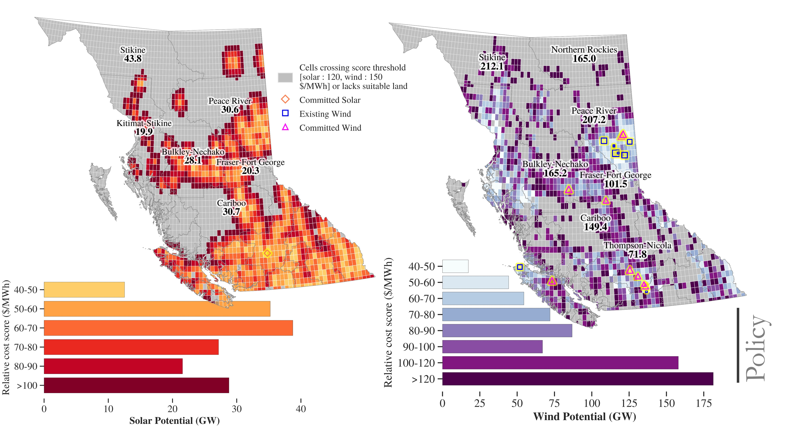
These results highlight the scale of capacity foregone when balancing renewable energy deployment with ecological and land-use safeguards. To better understand these dynamics, we next examine supply curves. Comparative supply curves reveal how policy-driven constraints reshape the accessible share of renewable energy potential.
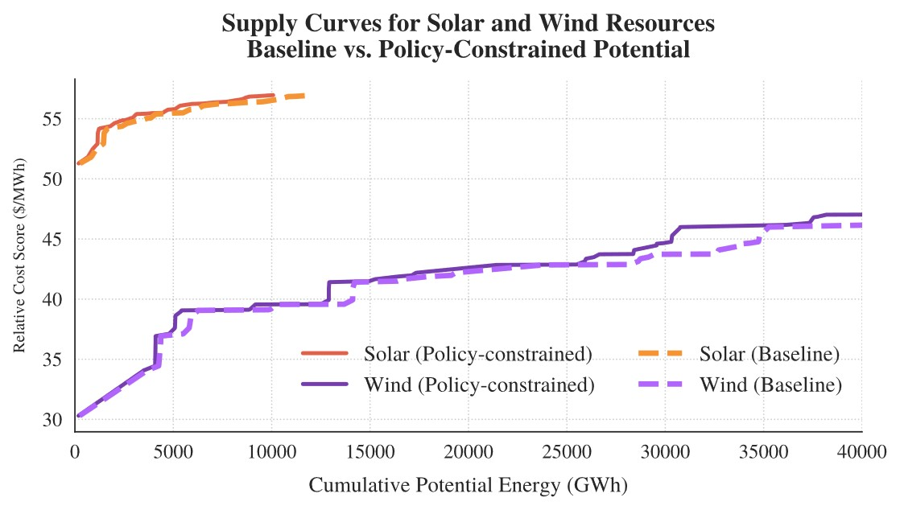
To benchmark the modeled supply curves, RESource outputs were aligned with the BC Hydro’s Resource Options Database (RODAT). In BC Hydro’s publicly available version of , The 2013 Resource Options Report Update (Appendix 3 of [73]) catalogued only on-shore wind projects, while the 2021 2021 IRP RODAT (section 3) RODAT replaced those site-specific listings with aggregate supply curves for wind and solar. In 2021 RODAT (Figure J-2), approximately 10 000 GWh of wind lie below 60 CAD /MWh, expanding to ≈ 40 000 GWh below 100 CAD /MWh. Solar potential extends to ≈ 10 000 GWh near 55–75 CAD /MWh (2020 CAD). These represent developer-optimized , grid-adjacent costs that omit spatial penalties or siting heterogeneity. An updated list of potential site-wise list from BCH is available at 2013 Resource Options Report Update.
Solar’s policy challenge is therefore one of limited availability. Wind’s challenge is the loss of both low-cost and diverse options. These patterns show that policy design matters. Expanding siting flexibility could support solar. Preserving access to competitive sites is critical for wind. Technology-specific planning will be more effective than uniform buffer rules.
Tightening buffers primarily truncates the solar supply curve (availability loss) while simultaneously removing the lowest‑score wind sites (competitiveness loss). Because the score embeds grid distance, a portion of the upward shift reflects grid access exposure; sites that remain attractive tend to be closer to substations or rated lines. Such availability constraints for solar and competitiveness constraints for wind have direct planning implications for transmission staging and siting policy.
Grid connectivity as a key planning bottleneck#
Grid accessibility plays a critical role in assessing economic viability of the sites. Locations with strong resource potential but far from substations were deprioritized due to estimated connection costs. This echoes growing global concerns: interconnection delays and transmission bottlenecks are now among the most cited obstacles to renewable deployment.
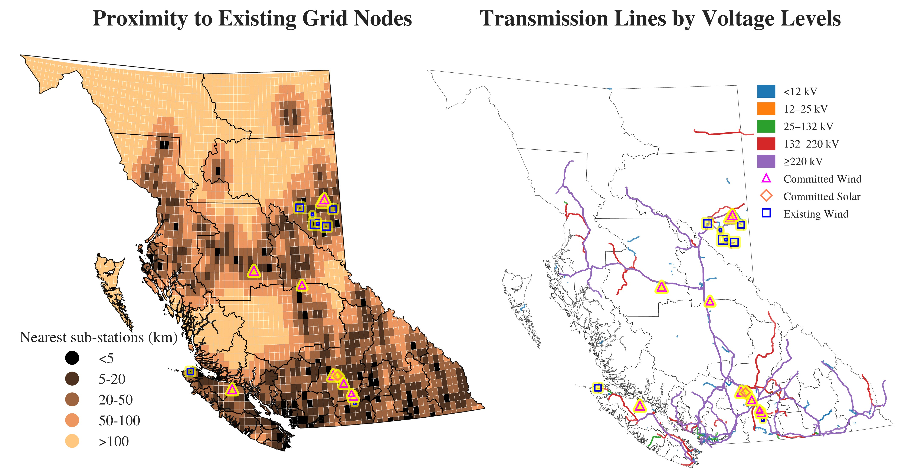
Grid data shown above is sourced from Openstreetmap.
Building on the spatial insights from scores and potential capacity distributions, Figure 13 offers a complementary capacity-focused view that further clarifies how these sites scores translate into aggregated development potential for expected energy yields. As the relative cost scoring is sensitive to proximity to transmission infrastructure, it helps translate technical resource potential into practical investment prioritization. Figure 13 provides overview of the renewable energy landscape by plotting three critical dimensions that drive investment decisions: potential capacity (approximate bubble size), average capacity factor (y-axis), and siting score (x-axis) for both solar and wind resources. Big bubbles (orange for solar, purple for wind) at lower end of Y-axis indicate comparatively high potential capacity for relatively lower costs. These represents the best candidates for site development.
Modeling assumptions and site ranking#
While RESource improves spatial transparency, several assumptions introduce uncertainties that must be carefully managed by the user:
Technological parameters: Uniform assumptions for turbine efficiency or solar panel tilt may not fully capture local microclimates, terrain effects, or resource variability.
Simplified economic metrics: LCOE-like scores are useful for ranking sites but omit site-specific factors such as permitting timelines, financing structures, and community engagement, which can materially influence project viability.
Grid proximity and costs: Transmission connection is modeled using straight-line (Euclidean) distance, whereas actual routing may be longer, more expensive, or constrained by terrain, right-of-way, or regulatory factors.
These uncertainties highlight that RESource provides a relative, comparative assessment rather than definitive predictions of project economics or feasibility. Users should interpret site rankings in the context of local knowledge, regulatory conditions, and potential site-specific adaptations.
Economic Scoring : Where Power Pays Off#
RESource ranks and prioritizes renewable energy sites using the score_cells() method, which calculates a Levelized Cost of Energy (LCOE) score for each grid cell. This score incorporates:
Relative cost scoring method (configurable)
Capital Recovery Factor (CRF):
CRF = r(1+r)^N / [(1+r)^N - 1]
where r = discount rate, N = project lifetime (years)
Annual Energy:
E_i = 8760 × CF_i × C_ref
Annual energy at site (i) in MWh/year
Site Score:
Score_i = [CRF × C_i_cap + FOM_i + VOM_i × E_i] / E_i [$/MWh]
Capital Cost:
C_i_cap = CAPEX_i × C_ref + C_i_spur + C_i_upgrade
Grid costs are added on top of plant CAPEX; upgrades can be modeled as linear $/MW-km.
Symbols (units):
r: discount rate
N: project lifetime (years)
C_i_cap: total capital at site (i) using fixed C_ref (plant CAPEX + grid connection)
FOM_i: annual fixed O&M at site (i)
VOM_i: variable O&M ($/MWh)
CF_i: capacity factor at site (i)
C_ref: fixed reference capacity (e.g., 100 MW)
Note: The score is a relative, LCOE-like screening metric (not investment-grade LCOE).
Configurations on the scenarios#
Scenario Name |
Configuration File |
Buffer Applied |
Buffer Distance(s) |
Description |
|---|---|---|---|---|
BASELINE |
None |
N/A |
Baseline scenario; no additional buffer zones around protected areas or aeroways. |
|
POLICY: Aeroway & CPCAD Buffers |
Aeroway & CPCAD Buffers |
>> see below |
Policy scenario; buffer zones applied around global exclusion areas,high slope lands, aeroway lands |
Clusterized Representation:#
For each regional district, we cluster the cells to reasonably represent the sites based on their scoring. Our scoring is already sensitive to distance to grid node, energy yield and capacity size. We use the score, apply k-means clustering with configurable wcss tolerance to find-out how many clusters are a reasonable representation of the regional district cells. To find the optimal clusters we use elbow charts.
In k-means clustering, WCSS (Within-Cluster Sum of Squares) measures the compactness of clusters by summing the squared distances between each point and its cluster centroid. The WCSS tolerance is a stopping criterion that defines the minimum change in WCSS required between iterations for the algorithm to continue. Formally, if the change in WCSS between consecutive iterations $|WCSS_t - WCSS_{t-1}|$ falls below a small positive threshold $\epsilon$, the algorithm assumes convergence and stops. Choosing a smaller tolerance increases precision but may require more iterations, while a larger tolerance speeds up convergence at the cost of slightly less accurate centroids.
Here are examples of some clusters' profile (representative profile of all cells that scored alike) with standard deviations from the actual ERA5 cells' timeseries.
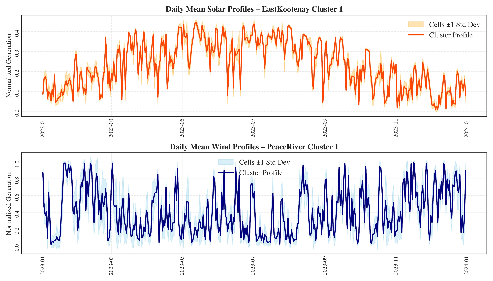
This case study demonstrates RESource's application to real-world renewable energy planning scenarios, integrating multiple data sources and constraints to provide actionable insights for VRE development in British Columbia.